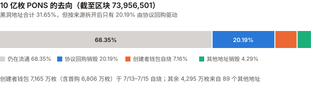
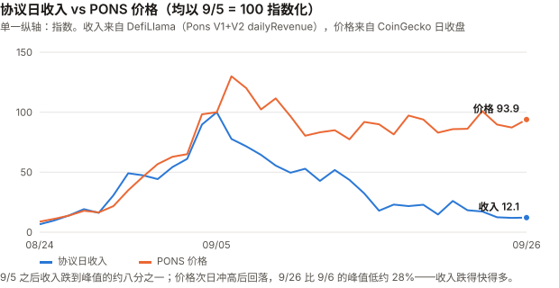
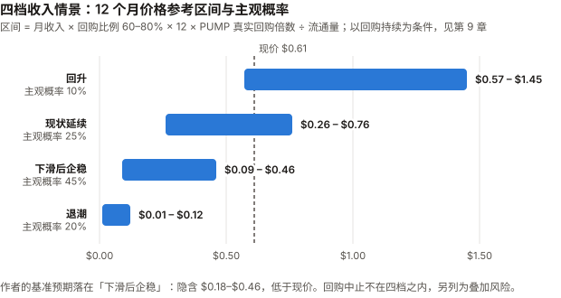

PONS / Pons 完整调研与分析报告
版本：2026 年 9 月（首期）
完成日期：2026-09-27
数据截止：2026-09-27。9 月尚未闭合，本期覆盖 9/1–9/27；收入类日度数据截至 9/26（最后完整日）。
本系列第十四个资产（BTC / SOL / ADA / ETH / BNB / HYPE / UNI / TRX / XIN / DOT / ZEC / CKB / GRAM / PONS）本版更新要点（首期）：
- PONS 是一个发射台（launchpad）的代币，而且它自己就是在这个发射台上发行的。
2026-07-13 在 Robinhood Chain 上一笔交易铸造 10 亿枚、全部注入流动性池，无团队分配、无解锁表。
上线约 11 周，从历史最低价 $0.00331678 涨到 $0.6098，约 184 倍。- 本期最重要的发现：收入与价格在 9 月初之后脱钩——收入周均跌了约 80%，价格从 9/6 收盘跌了 33%。
协议周日均收入从 9/1–9/7 的 $146.5 万跌到 9/22–9/26 的 $29.7 万（–79.8%；单日峰值口径 –87.8%）；
价格从 9/6 收盘 $0.9146 跌到 9/27 的 $0.6147（–32.8%；距盘中高点 –37.2%）。两者都在跌，收入跌得快得多。- 「31.65% 的供应已被销毁」这个数字需要拆开看。 由协议回购驱动的只有 20.19%；
7.16% 是创建者钱包在上线头三天自己烧掉的，4.29% 来自 89 个其他地址。
而且全部销毁量的 74% 发生在 7 月、币价只有几美分时——按当日价格只值 $364 万。- 回购是一项由单把私钥控制、可升级、没有文件约束 V2 收入的政策，不是持有人的权利。
V1 文档写「协议手续费的 80%」用于回购；V2 文档对 PONS 回购只字未提——而 V2 贡献了 79% 的累计收入。
「是否低于承诺」取决于 80% 覆盖哪个分母：只算 V1 收入，实际回购是承诺的 3.44 倍；算全部收入，实际是 58.9%。
回购合约的升级权限已用模拟调用确认只在一个普通钱包手里。已读的 4 份官方文件均未赋予持有人权利；第 5 份（MiCA 白皮书）未能读取。- 估值结论在审查后翻转：初稿以「PUMP 倍数 3.0–6.6 倍」判定现价「不贵不便宜」，但那个区间是用 PUMP 当前市值除以历史收入得到的假想值。
改用 PUMP 各月月末的真实市值后，PUMP 的收入倍数只有 1.91–2.54 倍（近 30 天 3.28 倍），
按收入口径 PONS（3.85–4.56 倍）比 PUMP 的每一个真实观测都贵；按回购口径，是否落在区间内取决于集中回购能否持续（见 9.3）。- 三个数据源的成交量差了约 30 倍，已用链上 Swap 事件解决。
HoodScan 只统计了发行池（$74.28 万/日），链上 5 个 V3 类池的真实成交约 $1,503 万/日；
发行池里 JIT 套利者加入的流动性是真实成交的 182 倍。- 9 月 16 日 FOMC 加息 25 基点至 3.75%–4.00%（三年来首次）。
9 月 29 日 Robinhood Chain 的 gas 补贴到期（多家媒体一致，未找到官方原文）。
利益冲突声明：作者未持有 PONS，与 Pons Labs, LLC、Robinhood 及 Robinhood Chain 生态项目
无雇佣、顾问或投资关系。本报告的链上数据全部由作者通过 Robinhood Chain 公开 RPC 节点直接读取，
收入数据取自 DefiLlama 公开 API，价格取自 CoinGecko API。免责声明：本报告不构成任何投资建议。PONS 上线不足三个月，是本系列迄今历史最短、波动最大的资产。
核心结论摘要（一页速览）
| 维度 | 核心判断 |
|---|---|
| PONS 是什么 | Robinhood Chain 上 Pons 发射台的代币。发射台按交易收取 1% 手续费（V1），V1 文档写明协议手续费的 80% 用于回购销毁 PONS。已读 4/5 份官方文件均未赋予持有人对收入的权利，回购是运营方的自主政策 |
| 价格位置 | $0.6098，市值 $4.17 亿（CoinGecko 第 126 位）。距 9/5 盘中高点 $0.971034 回撤 37.2%，距 9/6 收盘 –32.8%；8 月 +891.3%，9 月至今 +89.1% |
| 本期最重要的事实 | 收入与价格脱钩：收入周均从 9 月第一周跌去约 80%，价格从 9/6 收盘跌去 33%。按收入口径，PONS 市值约为当前年化收入的 3.85–4.56 倍，高于 PUMP 各月真实倍数（1.91–2.54 倍）和近 30 天（3.28 倍）——按收入口径，PONS 比 PUMP 贵 |
| 价值捕获 | 协议回购 2.019 亿枚（20.19% 的供应，按当日价 $1,971 万）。回购/收入累计 58.9%（含 8 月手动期的 26.8%）；9/2 自动化以来 72.1%。平日回购额几乎恒定（约 $12–14 万/日），比例高低主要由几笔集中回购决定 |
| 控制权 | 回购由一个可升级代理合约执行；模拟调用确认只有 owner——单签钱包 0xda4b…3968——能升级它；该钱包本身只持有 22 万枚 PONS（0.03%） |
| 收入质量 | 95.9% 的 9 月收入来自 V2（其他代币的交易），PONS 自身交易的自我循环部分约 3.0%——收入不是 PONS 自己的交易产生的；但付费者是否独立、交易能否持续，本期未验证 |
| 近期最大变量 | ① 9/29 gas 补贴到期；② 收入下滑是否止步；③ 回购政策是否被维持 |
| 估值立场 | 以回购为估值基础（持有人只通过回购连接到收入）。现价要求月回购 $470 万–$835 万（PUMP 真实回购倍数 7.39–4.16 倍）；PONS 平日回购节奏约 $390 万/月，低于区间，计入集中回购后约 $660–764 万/月，落在区间内。本报告的基准预期（10 月收入 $400–600 万）下，隐含价格 $0.18–$0.46，低于现价 |
| 风险等级 | 极高。年化波动率 392%（BTC 41%），与 BTC 的 R² 仅 0.046——BTC 只能解释约 5% 的日波动，真正的驱动因素本期未能识别 |
1. PONS 是什么
1.1 一个发射台的代币，发射在自己的发射台上
Pons 是一个代币发射台（launchpad）：任何人付 0.0005 ETH，就能在 Robinhood Chain 上一键发行一个固定供应的代币，
合约自动把全部供应注入 Uniswap 流动性池并锁定流动性，此后所有买卖都在池子里进行。
发射台的收入来自这些代币的交易手续费：
| 版本 | 机制 | 手续费 | 分配（按官方文档） |
|---|---|---|---|
| V1（2026-07 起） | 发行即进 Uniswap V3 池，流动性锁定 | 每笔交易 1% | 创建者 70% / 协议 30%（区块 8,991,118 之后；此前 90/10） |
| V2（DefiLlama 数据自 2026-08-04 起） | 先走联合曲线（bonding curve），达标后「毕业」进入 Uniswap V4 | 曲线费 + 钩子费，上限合计 20% | 协议先取一份，创建者可选开启回购，余下归创建者 |
PONS 代币本身就是 V1 发射台上发行的一个代币（发行池 0x10cc…26ba，WETH/PONS，1% 费率）。
V1 文档写明：协议手续费的 80% 以 TWAP（时间加权均价，即分批小额执行）方式回购并销毁 PONS，20% 用于基础设施与团队运营。
注意 V2 与 PONS 的关系：V2 的官方 README 明确写着 V2 的回购是针对被发行的代币、
买回后进入五年线性释放的金库，「不销毁」。V2 的协议收入流向 PONS 回购这一步，
没有写在任何合约或文档里——链上数据显示它确实在发生（见 4.3），但它是运营方的决定。
1.2 Robinhood Chain：它生长的土壤
| 事实 | 数值 |
|---|---|
| 主网上线 | 2026-07-01（Robinhood 官方与 Arbitrum 公告，多源一致） |
| 技术栈 | Arbitrum Orbit，以太坊二层，gas 以 ETH 支付，出块约 100 毫秒 |
| 定位 | 为代币化股票而建 |
| 实际主力 | memecoin。媒体援引数据称 memecoin 占早期成交的 93.5%（未取得原始数据） |
| 全链 TVL | $10.3 亿（DefiLlama v2/chains，2026-09-27） |
| 全链 30 天费用 | $3.75 亿（DefiLlama，含所有协议） |
Pons 在主网上线 12 天后（7/13）出现。 它的全部历史都发生在这条链的第一个季度里——
这意味着 Pons 的任何增长数据，都同时混杂着「这条链本身在冷启动」的效应。
1.3 发行：一笔交易铸造全部供应
从 Robinhood Chain 公开 RPC 直读合约 0x39dbed3a2bd333467115de45665cc57f813c4571：
| 事实 | 链上读数 |
|---|---|
totalSupply() |
1,000,000,000（不可升级：非代理合约、无 owner()） |
| 铸造 | 区块 8,963,150（2026-07-13 20:42 UTC），唯一一笔 mint，10 亿枚铸给发射台工厂 0x0c37…77a4 |
| 同一分钟 | 工厂把 10 亿枚全部转入发行池 0x10cc…26ba |
| 发行池当前余额 | 376 万枚（初始池已卖出 99.6%） |
| 同一区块的首购 | 0xf89f…892a 买入 68,057,245 枚（6.81%）——文档规定发行后头两个区块只允许创建者首购成交，因此该钱包就是创建者 |
无团队分配、无投资人、无解锁表。 Tokenomist 的记录是「一笔 Launchpool 分配，发行时全部释放」（经 unlocks.app 转述）。
所有权的来历：创始人 Ozzy（@MEADGod）2026-07-13 公开称：
「$PONS 的部署者把所有权和手续费转给了我的钱包，今后我会用 WETH 手续费回购 $PONS，并销毁我收到的所有 $PONS 手续费。」
（引自 unlocks.app 2026-09-08 文章；原推文未直接打开。）创始人为化名。
1.4 三个默认是否成立（XIN 期检查）
| 检查 | 结果 | 依据 |
|---|---|---|
| 流通量已知吗 | ✅ 已知且可链上复算 | 10 亿 − 黑洞地址 316,509,721 = 683,490,279；CoinGecko 报 683,553,425，相差 0.009% |
| 价格是可用的测量吗 | ⚠️ 可用但噪声极大 | 日成交额中位数 $1,449 万（足够）；但上线以来 73 个交易日里有 26 天单日涨跌超过 20%；链上流动性约 $430 万，约为市值的 1% |
| 代币持有人是剩余索取权人吗 | ❌ 没有找到赋权文件 | 已读 4 份官方文件：V1 文档、V2 文档、GitHub README、使用条款（Pons Labs, LLC，适用特拉华州法律，2026-07-16 生效）——均未赋予 PONS 持有人任何权利，也没有一份把回购写成义务。第 5 份 MiCA 白皮书页面的正文由客户端动态加载，未能读取 |
这里有一个本期差点犯的错误：链上
totalSupply()恒为 10 亿，而 CoinGecko 显示 6.84 亿，
我一度认为 CoinGecko 少算了 3.16 亿、FDV 应为 $6.23 亿。这是错的——该合约的销毁方式是
转入黑洞地址0x…dEaD，而不是调用burn减少总量，所以totalSupply()永远不变。
CoinGecko 的口径是对的。 这是 DOT 期「供应量要链上对账」的检查，方向反过来的一次：
链上直读的字段也需要理解它的语义才能用。
2. 发展阶段划分（11 周，四阶段）
| 阶段 | 时间 | 价格（日收盘） | 协议月收入 | 标志事件 |
|---|---|---|---|---|
| 一、公平发行与创建者自烧 | 7/13–7/31 | $0.0113 → $0.0414（7/17 盘中最低 $0.00331678） | 7 月 $405 万 | 7/13 发行；创建者钱包 7/13–7/15 烧掉 7,165 万枚；7 月销毁 2.34 亿枚，占全部销毁 74% |
| 二、沉寂 | 8/1–8/23 | 在 $0.017–$0.047 之间震荡 | — | 8/4 起 V2 开始产生收入；8 月回购/收入仅 26.8% |
| 三、爆发 | 8/24–9/5 | $0.0619 → $0.7042（9/5 收盘），13 天约 11.4 倍；次日 9/6 收盘 $0.9146 为日收盘最高 | 9/5 单日收入峰值 $206 万 | 9/2 Binance Alpha 上线；9/2 回购改由合约 0x5795 自动执行；9/5 盘中历史高点 $0.971034 |
| 四、收入回落、价格回撤 | 9/6–9/27 | $0.9146 → $0.6147，–32.8%；后三周在 $0.55–$0.71 震荡 | 周日均收入 $106 万 → $47 万 → $30 万 | 9/15 OKX 现货上线；9/16 FOMC 加息；收入跌去 87.8% |
一个区分：阶段三的上涨与收入上涨同步（见第 5 章的图），阶段四则脱钩。
本报告不把阶段三解读为「收入驱动」——两者同时受 Robinhood Chain 链上 memecoin 热度这一共同因素推动，
本期没有能区分「收入推高价格」与「共同因素同时推高两者」的检验。
3. PONS 当前现状
3.1 价格与市场
| 指标 | 数值（2026-09-27） |
|---|---|
| 价格 | $0.6098 |
| 市值 | $4.17 亿（CoinGecko 第 126 位） |
| 流通量 | 683,490,279（链上复算） |
| 历史高点 | $0.971034（2026-09-05 盘中）；日收盘最高 $0.9146（9/6） |
| 历史低点 | $0.00331678（2026-07-17） |
| 8 月 | 8/1 收盘 $0.0328 → 8/31 $0.3251，+891.3% |
| 9 月至今 | 8/31 $0.3251 → 9/27 $0.6147，+89.1% |
| 24 小时成交（CoinGecko 总计） | 约 $4,008 万 |
交易场所（CoinGecko tickers API，一手）：链上有 Ramses V3、Uniswap V3/V4、GIGA V3 等 Robinhood Chain DEX；
中心化交易所有 Gate、OKX、Bybit、MEXC、Kraken、Crypto.com、BTSE、BloFin、KCEX。
Binance 目前只在 Binance Alpha（9/2 上线，经 Binance Wallet 官方 X 帖子的搜索摘要转述），未上 Binance 现货。
3.2 成交量：三个数据源差了约 30 倍——链上解析的结果
| 来源 | 口径 | PONS 24 小时成交 |
|---|---|---|
| HoodScan | 链上 DEX | $73.65 万 |
| CoinGecko 列出的 DEX 交易对合计 | 链上 DEX | 约 $2,500 万（含 Uniswap V4） |
| CoinGecko 总计 | 含中心化所 | 约 $4,008 万 |
同样是链上 DEX，前两者差了约 30 倍。本报告不在两个二手口径之间挑一个，而是直接解析最近 24 小时
（区块 73,109,126–73,964,829）内 5 个 V3 类池子的 Swap 事件：
| 池子 | 交易对 / 费率 | Swap 笔数 | 真实成交（PONS） | ≈ 美元（×$0.62） | 同期加入的流动性（PONS） |
|---|---|---|---|---|---|
0x10cc（发行池） |
WETH / 1% | 1,744 | 1,197,988 | $74.28 万 | 217,870,117 |
0xed50 |
WETH / 0.3% | 6,150 | 7,331,695 | $454.57 万 | 3,420,313 |
0xf2a0 |
USDG / 动态 | 12,249 | 12,462,163 | $772.65 万 | 0 |
0x2f39 |
USDG / 动态 | 3,943 | 3,118,669 | $193.36 万 | 1,287,547 |
0x25c9 |
WETH / 1% | 335 | 130,816 | $8.11 万 | 10,039,234 |
| 合计（不含 Uniswap V4） | 24,421 | 24,241,332 | 约 $1,503 万 | 232,617,211 |
三个结论：
- HoodScan 的 $73.65 万与发行池单池的 $74.28 万几乎一致——它只统计了发行池。
- 链上真实成交约 $1,503 万/日（不含 V4），与 CoinGecko 的 DEX 合计同一量级。
- 发行池里被加入的流动性是真实成交的 182 倍（217,870,117 ÷ 1,197,988）。
同一笔交易内先加入、再撤出流动性的次数：发行池 117 次、0x25c9592 次——这是 JIT（即时流动性）：
套利者在大额买单成交前一刻挤进池子、吃掉手续费、随即撤出（见 4.6）。
因此按转账量统计 PONS 的「流量」会被严重注水：同一 24 小时内 PONS 共发生 141,519 笔转账、
转账总量 8.03 亿枚，超过流通量本身。
3.3 风险特征
| 指标 | PONS | BTC |
|---|---|---|
| 年化波动率（7/18–9/27 日收益） | 392% | 41% |
| 年化波动率（9 月） | 266% | 44% |
| 对 BTC 的 beta（7/18–9/27，n=71） | 2.08 | — |
| R² | 0.046 | — |
| 9 月 beta / R²（n=26） | 1.98 / 0.108 | — |
| 单日 |涨跌| > 20% 的天数 | 26 / 73 | — |
按 XIN 期规则，beta 必须和 R² 一起读：2.08 的 beta 看起来像「BTC 的两倍杠杆」，但 R² 只有 0.046——
BTC 只能解释 PONS 约 5% 的日波动。9 月 BTC 上涨 9.2%，对 PONS 的解释力依然很弱。
但按 CKB 期规则，低 R² 不能反过来证明驱动因素是什么——它只说明「不是 BTC」，
不能据此推断是「收入」「回购」或「上币」在驱动，本期没有做能区分这些的检验。
3.4 宏观环境
| 事件 | 状态 |
|---|---|
| 9/16 FOMC | 加息 25 基点至 3.75%–4.00%，12:0 全票，三年多来首次加息；点阵图中位数指向年内再加一次（CNBC、Schwab、KPMG 等多源一致，未打开美联储原文） |
| BTC | 8/31 $77,658 → 9/27 $84,836，+9.2% |
| ETH | $2,706.8（Robinhood Chain 的 gas 与 Pons 大部分手续费以 ETH 计价） |
宏观对 PONS 的直接解释力很弱（R² 0.046），但利率上升对投机性 memecoin 交易热度的压制
是影响 Pons 收入的一条间接渠道——本期无法量化这条渠道的强度。
4. 价值捕获：承诺的、执行的、可被强制的（本期核心章之一）
4.1 31.65% 被销毁——但这个数字由最便宜的那段时间主导
黑洞地址 0x…dEaD 在区块 73,956,501 时持有 316,505,371 枚（10 亿的 31.65%），共 19,857 笔转入、92 个来源地址。
| 月份 | 销毁枚数 | 按当日收盘价折美元 |
|---|---|---|
| 7 月 | 234,119,401（占全部销毁 74%） | $364 万 |
| 8 月 | 57,081,509 | $231 万 |
| 9 月（至 9/27） | 25,304,461 | $1,645 万 |
以枚数计的「销毁比例」被 7 月币价只有几美分时的销毁主导。 按美元计，9 月一个月的销毁额是 7 月的 4.5 倍，
但烧掉的枚数只有 7 月的 11%。读到「近三分之一供应已销毁」时，应当同时读到「其中四分之三只花了 $364 万」。

10 亿枚中：仍在流通 68.35%（683,494,629 枚，区块 73,956,501 快照），协议回购 20.19%，创建者钱包自烧 7.16%，其他地址约 4,295 万枚（4.29%）。
4.2 销毁的三种来源
逐个追踪每个销毁地址的 PONS 从哪里来：
| 类别 | 地址 | 销毁枚数 | 占 10 亿 | 按当日价 | 币从哪里来 |
|---|---|---|---|---|---|
| 协议回购 | 0xda4b…3968（EOA，7/13–9/2，1,532 笔）+ 0x5795…c324（合约，9/2–9/27，11,855 笔） |
201,909,213 | 20.19% | $1,971 万 | 0xda4b 转入的 PONS：75.0% 是在发行池的 1,668 笔买入（Swap 事件收款人即 0xda4b）；22.4%（4,031 万枚）来自 0x31ca…54b5——它是发行池流动性头寸的手续费领取地址（池子 Collect 事件的收款人，共领走 5,208 万枚 PONS 与 161 ETH），即 PONS 计价的手续费、收到即烧（见 5.3）；0x5795 每笔都是「用 WETH 在发行池买入 → 转入黑洞」 |
| 创建者钱包自烧 | 0xf89f…892a（EIP-7702 委托钱包，3 笔） |
71,648,377 | 7.16% | $81 万 | 其中 6,806 万枚是铸造区块内的首购，其余 359 万枚为后续买入 |
| 其他地址 | 89 个地址 | 42,947,782 | 4.29% | $187 万 | 49 个地址只烧过一次 |
只有第一类与「协议收入回馈持有人」有关。 创建者自烧是一次性的承诺性动作，不代表收入；
其他地址的销毁是个人行为。把 31.65% 全部归功于「收入驱动的通缩」是错的——对应收入的是 20.19%。
交叉核对：DefiLlama 记录的 PONS 回购（dailyHoldersRevenue）累计 $1,936 万，
本报告按日收盘价折算的协议回购 $1,971 万，相差 1.8%（来自日线价格粒度）。
按 CKB 期规则说明：两者读的是同一批链上事件，一致只证明本报告的解析没有算错，不构成对回购事实的独立验证——
回购本身是链上事实，不需要独立验证。
4.3 回购的资金链：链上看到的
解码 0x5795 的交易，每一笔回购都是同一个模式：
收取各发行代币池的协议手续费（代币 + WETH）
→ 把收到的发行代币换成 WETH
→ 用 WETH 在 PONS 发行池 0x10cc 买入 PONS
→ 转入 0x…dEaD
合约存储里记着每次买入的切片大小 0.5 ETH——与交易里观察到的每笔买入量一致，这就是文档说的 TWAP。
这说明 V2 的收入确实在流向 PONS 回购：9 月 V1 协议收入只有 $92 万，而 9 月回购 $1,571 万——
回购额是 V1 收入的 17 倍，只能来自 V2。但如 1.1 所述，没有任何文件规定这一步。
4.4 承诺 80%：分母是什么，决定了「高于」还是「低于」
| 7 月 | 8 月 | 9 月（至 9/27） | 累计 | |
|---|---|---|---|---|
| 协议收入（V1+V2，DefiLlama） | $404.9 万 | $619.0 万 | $2,264.7 万 | $3,288.6 万 |
| 其中 V1 收入 | $404.9 万 | $205.7 万 | $92.5 万 | $703.1 万 |
| 其中 V2 占比 | 0% | 66.8% | 95.9% | 78.6% |
| PONS 回购（DefiLlama） | $199.2 万 | $165.7 万 | $1,570.7 万 | $1,935.7 万 |
| 回购 / 全部收入 | 49.2% | 26.8% | 69.4% | 58.9% |
V1 文档的原话（docs.ponsfamily.com，本期直接抓取）：手动回购「via an automated TWAP using 80% of protocol fees」
（用协议手续费的 80% 以 TWAP 方式执行），并注明「This amount is not immutable yet」（这个比例尚未不可变）。
V2 文档对 PONS 回购只字未提——V2 的「buyback」指的是被发行代币的回购，买回后进五年释放金库、不销毁。
所以「80%」有两种读法，两种都说得通，本报告不替运营方选：
| 读法 | 应回购 | 实际 $1,935.7 万是它的 |
|---|---|---|
| 只覆盖 V1 收入（文档写在 V1 页面，V2 文档未提） | $703.1 万 × 80% = $562.5 万 | 3.44 倍 |
| 覆盖全部协议收入（「protocol fees」按字面泛指） | $3,288.6 万 × 80% = $2,630.9 万 | 73.6%（少 $695.2 万） |
能确定的只有：V2 收入流向 PONS 回购这一步没有任何文件约定（见 4.3），回购强度是运营方的选择。
回购合约 0x5795 当前还持有 286.01 ETH（约 $77 万）待用；另有一个 2/3 多签 0x29b7…15bc 持有 742.61 ETH（约 $201 万），
但这个多签的角色本期未能确认，它只是出现在回购合约的存储槽 0 里。
比例本身也不稳定——而且主要由几笔集中回购决定：
| 窗口 | 回购 / 收入 |
|---|---|
| 累计（含 8 月手动期） | 58.9% |
| 9/2 自动化以来 | 72.1% |
| 9/8–9/26 | 87.5% |
| 9/23–9/26（无集中回购的 4 天） | 45.8%（日回购 $12.2 万–$13.2 万） |
9/19–9/26 里，除 9/22 一天回购 $75.0 万外，每天的回购额都落在 $12.2 万–$14.0 万之间，几乎不随当天收入变化。
这更像一个按固定节奏执行的 TWAP，外加不定期的集中回购，而不是「每天按收入的固定比例」。
（这是从日度数据推断的执行形态，合约的节奏参数本期未解码，未验证。）
准确的说法是：回购强度由运营方的节奏和集中回购的时点决定；按不同窗口可以是 46% 也可以是 87.5%；没有机制把它固定在任何比例上。
4.5 一把私钥：回购由谁控制
| 事实 | 链上读数 |
|---|---|
回购合约 0x5795 的类型 |
ERC-1967 代理合约，自身 130 字节，逻辑在 0x1c65…1748（22,999 字节）；逻辑合约含 upgradeToAndCall 与 proxiableUUID（返回 ERC-1967 实现槽）→ UUPS 模式（升级函数写在逻辑合约里） |
| 谁能升级（模拟调用） | 以 0xda4b 身份 eth_call 模拟 upgradeToAndCall(当前逻辑地址, 空)：成功；以任意其他地址模拟：回滚，错误码 0x118cdaa7 = OwnableUnauthorizedAccount（「调用者不是授权账户」）→ 升级权限由 owner() 独占 |
owner() |
0xda4b…3968——一个普通钱包（EOA） |
| 该钱包的历史 | 7/13–9/2 手动执行了全部 1.786 亿枚回购销毁；9/2 起为回购合约的 owner；按创始人 7/13 的公开表述，它应是接收 PONS 发行池手续费的钱包 |
含义：回购的执行逻辑可以被一把私钥整体替换（升级即可改参数或停止）。持有人没有任何机制阻止这件事。
但承重的不是这把私钥，而是资金路由：即使回购合约不可升级，运营方照样可以不再把 V2 收入送进来（4.3）——
迁入多签或时间锁之后，持有人拿到的依然是承诺而不是权利。单私钥额外带来的是一个独立的安全风险：
私钥一旦被盗，攻击者可以升级合约、转走合约里的 286 ETH，并改写回购逻辑。这不是一个关于「会不会被滥用」的判断——本报告没有任何证据表明运营方有此意图，
截至 9/27 回购每天都在执行。这是一个关于「持有人拿到的是什么」的描述：
他们拿到的是一个人正在履行的公开承诺，而不是一项可以被执行的权利。
两者在运营方意愿不变时表现完全相同，区别只在意愿改变的那一天才显现。
4.6 回购被套利者包裹（JIT）
回购合约任何人都可以触发。链上观察到套利者（如 0x9f76… 通过 0x147c…、0x2737… 通过 0x0c63…）
把「向发行池加入大额流动性 → 触发多笔回购买入 → 撤出流动性并收走手续费」打包在同一笔交易里执行。
经济影响很小：回购买入的 1% 池费本应部分归入锁定的流动性头寸（创建者与协议），
现在被 JIT 流动性分走一部分，损耗上限约为回购额的 1%。
但它对「成交量」统计的影响很大——见 3.2，发行池加入的流动性是真实成交的 182 倍。
4.7 团队几乎不持有 PONS
| 钱包 | PONS 余额 | 占流通量 |
|---|---|---|
0xda4b（回购 owner / 创始人手续费钱包） |
221,540 | 0.03% |
0xf89f（创建者） |
126,835 | 0.02% |
已识别的两个团队钱包合计持有约 0.05% 的流通量。（团队可能有其他钱包，本期无法识别，未验证。）
这对持有人意味着两面：好的一面是没有团队解锁抛压；
坏的一面是团队的经济利益主要来自手续费（创建者分成 + 协议 20%），而不是 PONS 的价格——
回购是团队把自己的一部分收入让渡给持有人，这种让渡在团队自身利益上没有强制理由。
4.8 这件事的性质
本报告能说的：
- PONS 的回购是真实发生、链上可复现的，资金来自其他代币的交易手续费；
- 回购强度没有被任何文件约束到 V2 收入上，按窗口在 46%–87.5% 之间，由运营方的节奏决定；
- 回购的存续依赖运营方的意愿，升级权限在单个私钥手里；已读 4/5 份官方文件均未赋予持有人权利。
本报告不能说的：
- 不能说「回购会停止」——没有任何证据；
- 不能说「运营方违约」——没有约束性文件；
- 不能说「PONS 的价值由回购决定」——3.3 已说明本期无法区分价格驱动因素。
5. 平台经济：收入的峰值与衰减（本期核心章之二）
5.1 Pons 是 Robinhood Chain 上费用最高的协议
DefiLlama overview/fees/robinhood chain（30 天，2026-09-27）：
| 协议 | 类别 | 24 小时费用 | 30 天费用 |
|---|---|---|---|
| Pons V2 | 发射台 | $154.4 万 | $1.407 亿 |
| Uniswap V4 | DEX | $141.9 万 | $1.091 亿 |
| Robinhood Chain（链本身） | 链 | $9.1 万 | $3,952 万 |
| Uniswap V3 | DEX | $24.3 万 | $3,569 万 |
| GMGN | 交易应用 | $18.6 万 | $3,112 万 |
| Pons V1 | 发射台 | $3.6 万 | $624 万 |
| NOXA Fun | 发射台 | $1.7 万 | $316 万 |
| o1 Launchpad | 发射台 | $0.2 万 | $313 万 |
Pons V1+V2 占 Robinhood Chain 全链 30 天费用的 39.2%。 在同链发射台里没有接近的对手。
⚠️ 本报告在调研中曾错误地写下「Pons 不在 DefiLlama 上」——第一次查询只打印了前 25 条，
Pons 排在后面。这是「否定性结论必须检查搜索范围」的教训的一次险些复现，已在成稿前更正。
5.2 收入从峰值下跌 87.8%
| 周（不重叠） | 用户支付的费用 | 协议收入 | 日均协议收入 | 较上周 | 回购 | 回购/收入 |
|---|---|---|---|---|---|---|
| 9/1–9/7 | $5,470 万 | $1,025.8 万 | $146.5 万 | — | $506.7 万 | 49% |
| 9/8–9/14 | $4,507 万 | $741.5 万 | $105.9 万 | –28% | $685.5 万 | 92% |
| 9/15–9/21 | $2,107 万 | $326.6 万 | $46.7 万 | –56% | $252.9 万 | 77% |
| 9/22–9/26（5 天） | $1,013 万 | $148.3 万 | $29.7 万 | –36% | $125.6 万 | 85% |
单日协议收入峰值是 9/5 的 $2,056,973，9/24–9/26 日均 $250,251——跌去 87.8%。

以 9/5 = 100 指数化：9/26 收入指数 12.1，价格指数 93.9。价格指数最高 129.9（9/6）。
⚠️ 基期选择会放大观感：9/5 是收入的单日峰值，却不是价格的峰值（价格次日才见顶）。
按各自的峰值算，收入周均 –80%（单日 –87.8%），价格 –33% 到 –37%。脱钩依然明显，但价格不是「没动」。
两条线在 8/24–9/5 几乎同步上升，9/5 之后分道扬镳。 这是本报告估值章（第 9 章）要回答的核心问题：
收入跌去约八成而价格只跌三成，有三种解释：① 市场在看穿短期波动；② 价格还没跟上；③ PONS 的价格本来就不由收入定价——
而是由上币（9/2 Binance Alpha、9/15 OKX）、渠道和链上热度决定。本期数据无法区分这三者。
第三种如果成立，会削弱第 9 章整个收入/回购型估值框架——这一点在 9.6 列为弱点。
5.3 收入的构成：不是 PONS 自己的交易产生的
三个担心，前两个基本不成立，第三个本期无法回答：
- 「PONS 交易产生的手续费又去买 PONS」的自我循环有多大？
PONS 发行池 24 小时真实成交 $74.28 万 × 1% ≈ $7,428/日，相对当前协议日收入约 $25 万，
当前最多约 3.0%（且这 1% 里还有一部分被 JIT 流动性分走）。当前的回购资金主体来自其他代币的交易。
7 月不是这样：见 4.2，0xda4b销毁的 1.786 亿枚里有 4,031 万枚（22.6%）是直接从 PONS 发行池收取的 PONS 计价手续费，
收到即烧——这部分就是 PONS 自己的交易产生的。按到账当日价约 $65 万（7/13–7/14 到账的 2,990 万枚按 7/15 价格近似），
只占累计回购美元额的约 3%，但占协议回购枚数的约五分之一。 - 收入是否以 PONS 计价（TRX/BNB/HYPE 期的退化陷阱）？ 当前不是。V2 的费用始终以报价资产（ETH 或 USDG）收取，
9/2 以后回购合约把收到的发行代币换成 WETH 再买 PONS。收入以美元/ETH 计，不含 PONS 价格。（例外即上一条的 7 月实物手续费。） - 付费者是不是独立的、交易能不能持续？ 本期未验证。 排除「PONS 自己的交易」只排除了一条很窄的自循环；
V2 其他代币的手续费仍可能来自同一批地址的反复交易、创建者刷量（1:1 成本，见记分卡门槛 11 说明）或回购激励。
要回答它需要对 V2 前几大费用来源代币做地址聚类、资金来源和留存分析，本期没有做。
所以本报告只说「收入不是 PONS 自己的交易产生的」，不说「收入是外生的」。
5.4 9/29：gas 补贴到期
多家媒体（KuCoin、crypto.news、cryptoticker、cryptonews）一致报道：Robinhood 随主网推出的 90 天 gas 补贴在 2026-09-29 到期，
8 月中旬起已从单笔 $5.00 下调到 $0.50。未找到 Robinhood 官方原文，按硬规则标为多源一致但非一手。
一个关键限定：补贴只覆盖通过 Robinhood Wallet 执行的交易，不是全链。
Pons 用户中有多少比例走 Robinhood Wallet，本报告没有数据，因此无法估计补贴到期对 Pons 收入的冲击幅度。
时间顺序值得注意：Pons 收入的 87.8% 下跌发生在补贴到期之前。补贴到期是「还没发生的下行风险」，
不是「已发生下跌的解释」——已发生的下跌需要另外的解释，本期没有找到能区分原因的数据。
5.5 可比：Pump.fun 的收入曲线
Pump.fun（Solana 上最大的发射台，代币 PUMP）是最直接的参照：同一业务、同样用收入回购、历史长得多。
| PUMP | PONS | |
|---|---|---|
| 市值 | $21.06 亿 | $4.17 亿 |
| 近 30 天协议收入 | $5,271.7 万 | $2,537.1 万（8/28–9/26） |
| 近 30 天回购 | $2,341.6 万（占收入 44%） | $1,594.0 万（占收入 63%） |
| 协议月收入（2026 年） | 6 月 $2,662 万、7 月 $3,371 万、8 月 $5,811 万 | 7 月 $405 万、8 月 $619 万、9 月 $2,265 万 |
| 可用的收入历史 | 18 个月以上 | 11 周 |
PUMP 2026 年的协议月收入（DefiLlama）：5 月 $3,439 万、6 月 $2,662 万、7 月 $3,371 万、8 月 $5,811 万、9 月（至 9/27）$4,347 万——
在 $2,600 万–$5,800 万之间起伏，没有归零。 这是本报告「收入回落后企稳」情景的唯一历史参照，
但要注意两点：它是 N=1，而且 PUMP 是这类发射台里活下来的那一个（幸存者偏差）；
这几个月展示的是「起伏」，并没有给出「峰值后跌多少才企稳」的量化锚点。
6. 核心价值逻辑
6.1 多头逻辑
| # | 逻辑 | 强度 | 说明 |
|---|---|---|---|
| 1 | 收入真实，且不是 PONS 自己的交易产生的 | ★★★☆☆ | 上线 11 周累计协议收入 $3,289 万；9 月 95.9% 来自 V2（其他代币交易）；当前自我循环约 3.0%。付费者独立性未验证（见 5.3 第 3 条），故不给四星 |
| 2 | 同链份额领先 | ★★★★☆ | 占 Robinhood Chain 30 天全链费用 39.2%，同链发射台无接近对手 |
| 3 | 回购真实执行 | ★★★☆☆ | 协议回购 2.019 亿枚（20.19%），链上可逐笔复现。但见空头 2、3 |
| 4 | 无解锁抛压 | ★★★☆☆ | 公平发行、无团队分配；已识别团队钱包只持有约 0.05% |
| 5 | 按回购口径，估值可以落在 PUMP 的真实区间内 | ★★☆☆☆ | 计入集中回购时，PONS 市值/年化回购 4.55–5.24 倍，PUMP 各月真实值 4.16–5.44 倍、当前 7.39 倍。但只看平日回购节奏则为 8.91 倍，高于 PUMP 所有观测（见 9.3） |
| 6 | 交易场所快速扩张 | ★★☆☆☆ | 11 周内上了 Gate、OKX、Bybit、MEXC、Kraken 等及 Binance Alpha |
6.2 空头逻辑
| # | 逻辑 | 强度 | 说明 |
|---|---|---|---|
| 1 | 收入三周跌去 87.8%，且仍在下降 | ★★★★★ | 周日均 $146.5 万 → $29.7 万；最近一周 –36%。现价需要的是止跌，而趋势还没给出止跌信号 |
| 2 | 回购是自主政策，不是权利 | ★★★★☆ | 已读 4/5 份官方文件均未赋权；V2 收入流向回购无文件约定；强度按窗口 46%–87.5%，文档自称「尚未不可变」 |
| 3 | 单私钥的密钥安全风险 | ★★★☆☆ | 模拟调用确认升级权限由 EOA owner() 独占；私钥被盗即可升级合约、转走 286 ETH。与空头 2 不同：空头 2 是意愿风险，这条是安全风险 |
| 4 | 按收入口径，比 PUMP 所有真实观测都贵 | ★★★☆☆ | 市值/当前年化收入 3.85–4.56 倍，PUMP 6–8 月月末 1.91–2.54 倍、近 30 天 3.28 倍（见 9.3） |
| 5 | 依附于一条三个月大的链的一个热点 | ★★★★☆ | Robinhood Chain 上线 88 天；成交主力是 memecoin；9/29 gas 补贴到期 |
| 6 | 历史极短，统计推断能力极弱 | ★★★☆☆ | 11 周数据，所有倍数、比率都可能只是一个冷启动季度的特征 |
| 7 | 流动性薄、波动极大 | ★★★☆☆ | 链上流动性约 $430 万（市值 1%）；年化波动 392% |
| 8 | 化名团队 + V2 未经审计 | ★★★☆☆ | V2 文档原话：「没有任何审计已完成，请把 V2 视为未经审计」 |
按 ZEC 期「声明了偏向，就要在评分里执行」：空头 1 是 ★★★★★，因为它是本期唯一已发生且仍在持续的负面事实；
空头 2 是 ★★★★☆ 而非 ★★★★★，因为它描述的是「持有人拿到的是什么」，本期没有任何它已造成损失的证据；
空头 3 是 ★★★☆☆，因为它是尾部安全风险，发生概率本期无法估计。
6.3 传统机构视角
本期没有找到任何传统金融机构对 PONS 本身的覆盖。 能找到的都是对 Robinhood（HOOD）与 Robinhood Chain 的评论：
| 机构 | 观点（经媒体转述，未打开原报告） | 与 PONS 的关系 |
|---|---|---|
| Bernstein | 重申 HOOD 买入评级、目标价 $160；指出 Robinhood Chain 早期成交由 memecoin 主导 | 间接：确认 Pons 所在生态的主力是 memecoin |
| StoneX（Mark Palmer） | Robinhood Chain 增长来自四个因素：品牌、无需许可、补贴的 gas 费、memecoin 与代币化股票的飞轮 | 直接相关：把 gas 补贴列为增长驱动之一——而它 9/29 到期 |
| Morgan Stanley | 上调 HOOD 评级，理由是公司整体产品线增长，与链无关 | 无 |
配平说明：这些机构评论的对象是 Robinhood 公司，它们看多 HOOD 不等于看多 PONS。
StoneX 把 gas 补贴列为驱动因素之一，是本报告找到的唯一一条与 PONS 近期风险直接相关的机构观点。
7. 与其他资产的比较
7.1 与 Pump.fun（PUMP）
| 维度 | PUMP | PONS |
|---|---|---|
| 业务 | Solana 发射台 | Robinhood Chain 发射台 |
| 市值 / 近 30 天年化收入 | 3.28 倍 | 1.35 倍（含峰值的 30 天窗口） |
| 市值 / 年化月收入（月末真实市值） | 6 月 1.91 倍、7 月 1.95 倍、8 月 2.54 倍 | — |
| 市值 / 当前运行速率年化收入 | — | 3.85 倍（9/22–9/26）/ 4.56 倍（9/24–9/26） |
| 回购 / 收入（近 30 天） | 44% | 63% |
| 市值 / 年化回购 | 当前 7.39 倍；6 月 4.16、7 月 4.17、8 月 5.44 倍 | 4.55 倍（5 天）/ 5.24 倍（7 天）/ 8.91 倍（3 天，无集中回购） |
| 收入历史 | 18 个月以上 | 11 周 |
用哪个窗口、哪个分子，结论都不同（见 9.2、9.3）。按含峰值的 30 天窗口，PONS 看起来只有 PUMP 倍数的四成；
按当前运行速率的收入，PONS 比 PUMP 每一个真实观测都贵；按回购，结论取决于是否计入集中回购。
7.2 在 Robinhood Chain 发射台中
同链发射台 30 天费用：Pons V2 $1.407 亿、Pons V1 $624 万、NOXA Fun $316 万、o1 Launchpad $313 万。
Pons 合计是其余发射台之和的 23 倍以上。 Flap sh、clanker 等多链发射台也已部署到 Robinhood Chain，
但 DefiLlama 未单列它们在该链的费用。
7.3 与 BTC
beta 2.08、R² 0.046（见 3.3）。PONS 与 BTC 的关系弱到不适合用 BTC 做它的对冲或参照。
8. 未来关键变量（催化剂日历）
| 时间 | 事件 | 可能影响 | 方向 | 置信度 |
|---|---|---|---|---|
| 2026-09-29 | Robinhood Chain gas 补贴到期 | 交易成本上升可能压低发射台活跃度；冲击幅度取决于 Pons 用户中 Robinhood Wallet 的占比（未知） | ↓ | 中（日期多源一致，影响幅度未知） |
| 10 月 | 收入是否止跌、回购是否跟上 | 第 9 章的反解门槛：月回购 $639 万（PUMP 8 月回购倍数 5.44 倍）；按 80% 比例约等于月收入 $800 万 | 决定性 | 高（可观测） |
| 持续 | 回购/收入比与回购合约 owner | 回购强度可调；owner 若迁入多签或时间锁，是控制权风险的实质改善 | ↑/↓ | 中 |
| 待定 | V2 审计报告发布 | V2 贡献 95.9% 的收入却未经审计 | ↑ | 低（无时间表） |
| 待定 | 更多中心化交易所上市（如 Binance 现货） | 本期没有任何迹象，仅列为可能性 | ↑ | 低 |
| 年内 | 美联储是否再次加息 | 点阵图指向年内再加一次 | ↓ | 中 |
| 持续 | Robinhood Chain 代币化股票与 memecoin 的结构变化 | 若链上活跃度从 memecoin 转向股票代币，发射台收入可能结构性下降 | ↓ | 低 |
9. 估值：反解与情景
本章在发布前审查后重写（见 11.6）。初稿以收入为分子、以一个假想的 PUMP 倍数区间（3.0–6.6 倍）为参照，
得出「不贵也不便宜」。两处都被推翻：分子应是回购（持有人只通过回购连接到收入，第 4 章），参照应是 PUMP 的真实历史倍数。
9.1 估值结构的退化检验（TRX 期规则）
本章用「稳态月回购 × 12 × 倍数 ÷ 流通量」。回购额以 ETH 计、换算为美元，不含 PONS 价格；
流通量用链上复算的 683,490,279（不预估未来回购带来的缩减，按公允价格回购对每枚价值中性）。
价格不会在等式两边约掉。 ✅
为什么用回购而不用收入：第 4 章的结论是持有人与收入之间唯一的连接是回购——收入里没有进入回购的部分（按窗口 13%–54%），
持有人一分也拿不到。用收入做分子，等于把平台的收入当成 PONS 的现金流。 收入口径保留为对照（9.3 下半）。
9.2 窗口选择决定倍数（XIN 期「查询窗口长度会改变返回值」）
| 口径 | 年化值 | 市值 / 年化值 |
|---|---|---|
| 收入，近 30 天（8/28–9/26，含峰值） | $3.087 亿 | 1.35 倍 |
| 收入，9/22–9/26 日均 × 365 | $1.082 亿 | 3.85 倍 |
| 收入，9/24–9/26 日均 × 365 | $0.913 亿 | 4.56 倍 |
| 回购，9/20–9/26 日均 × 365（含 9/22 集中回购） | $7,957 万 | 5.24 倍 |
| 回购，9/22–9/26 日均 × 365（含 9/22 集中回购） | $9,168 万 | 4.55 倍 |
| 回购，9/24–9/26 日均 × 365（平日节奏） | $4,677 万 | 8.91 倍 |
同一天，倍数从 1.35 到 8.91——全部来自口径和窗口。 本报告不采用含峰值的 30 天窗口（CKB 期规则）；
回购口径下，是否计入 9/22 那笔 $75 万的集中回购，让倍数相差近一倍。
9.3 反解：当前价格要求什么
参照：PUMP 各月月末的真实倍数（CoinGecko 月末市值 ÷ DefiLlama 当月协议收入/回购 × 12）：
| 6 月 | 7 月 | 8 月 | 当前（近 30 天） | |
|---|---|---|---|---|
| PUMP 月末市值 | $6.09 亿 | $7.87 亿 | $17.71 亿 | $21.06 亿 |
| 市值 / 年化回购 | 4.16 倍 | 4.17 倍 | 5.44 倍 | 7.39 倍 |
| 市值 / 年化收入 | 1.91 倍 | 1.95 倍 | 2.54 倍 | 3.28 倍 |
PONS 现价（市值 $4.1686 亿）要求的稳态月回购：
| 若市场给的回购倍数是 | 所需月回购 | PONS 当前 |
|---|---|---|
| 7.39 倍（PUMP 当前） | $470 万 | 平日节奏 $390 万/月（9/24–9/26） |
| 5.44 倍（PUMP 8 月） | $639 万 | 计入集中回购 $663 万–$764 万/月（7 天 / 5 天） |
| 4.16 倍（PUMP 6–7 月） | $835 万 |
收入口径对照：按 PUMP 真实收入倍数 3.28 / 2.54 / 1.91 倍，现价要求月收入 $1,059 万 / $1,368 万 / $1,819 万；
PONS 当前运行速率 $761 万–$902 万/月，低于所有三个要求。
结论（两句，不合成一句）：
- 按收入口径，PONS 比 PUMP 的每一个真实观测都贵。 这一条不依赖窗口选择——即使用最有利的 5 天窗口也是 3.85 倍，高于 PUMP 的 3.28 倍。
- 按回购口径，现价是否落在 PUMP 区间内，取决于集中回购能否持续。 只算平日节奏（$390 万/月），低于区间下沿；
计入 9/22 那样的集中回购（$663–764 万/月），落在 PUMP 8 月倍数附近。PONS 回购口径比收入口径便宜，是因为它最近把更高比例的收入送进了回购（63% 对 PUMP 的 44%）——而这个比例是运营方随时可调的。
本报告的基准预期：10 月协议收入 $400 万–$600 万（延续 9 月后三周的下降但减速），回购比例 60%–80%，
即月回购 $240 万–$480 万。按 PUMP 6–8 月的回购倍数（4.16–5.44 倍），隐含价格 $0.18–$0.46，低于现价 25%–71%。
这是作者的判断，不是模型输出；它已登记为记分卡 P9-5。
9.4 四档收入情景（12 个月）
推导方式：价格 = 假设稳态月收入 × 回购比例 × 12 × 假设回购倍数 ÷ 683,490,279。回购比例统一取 60%–80%（9/2 以来 72.1%）。
四档收入首尾相接，覆盖 $50 万以上的全部区间（低于 $50 万并入「退潮」）。
| 情景 | 稳态月收入 | 月回购 | 回购倍数 | 推出市值 | 推出价格 | 主观概率 |
|---|---|---|---|---|---|---|
| 回升 | ≥ $1,000 万（取 $1,000–1,400 万） | $600–1,120 万 | 5.44–7.39 倍（PUMP 8 月至当前） | $3.92 亿–$9.93 亿 | $0.57–$1.45 | 10% |
| 现状延续 | $600 万–$1,000 万 | $360–800 万 | 4.16–5.44 倍（PUMP 6–8 月） | $1.80 亿–$5.22 亿 | $0.26–$0.76 | 25% |
| 下滑后企稳 | $200 万–$600 万 | $120–480 万 | 4.16–5.44 倍 | $0.60 亿–$3.13 亿 | $0.09–$0.46 | 45% |
| 退潮 | $50 万–$200 万 | $30–160 万 | 2.0–4.16 倍 | $720 万–$7,990 万 | $0.01–$0.12 | 20% |

图中横轴刻度 $0.00 / $0.50 / $1.00 / $1.50。现价 $0.61 落在「现状延续」区间内、「回升」区间下沿之上。
这四个百分比是作者的主观概率（不是校准过的，但作者按它们下注——见记分卡 P9-1、P9-5）。每一档需要什么：
- 回升 10%：收入在 9/29 gas 补贴到期后反转回升，日均回到约 $33 万以上（9/22–9/26 为 $29.7 万，9 月第三周为 $46.7 万）。需要一个新的需求来源，本期没有看到。
- 现状延续 25%：收入停在 9/22–9/26 的水平附近（$761–902 万/月）。需要过去三周 –28%、–56%、–36% 的周环比立即归零。
- 下滑后企稳 45%：收入从当前运行速率再降约 30%–75% 后停住。作者的基准预期落在这一档：它不需要任何反趋势事件，只需要下降减速。
- 退潮 20%：Robinhood Chain 的 memecoin 热度大幅退潮（一条上线 88 天、成交主力是 memecoin 的链），收入回到 V1 单独运行时的量级（7 月 $405 万的一半以下）。
倍数下沿 2.0 倍是判断，不是测量——PUMP 没有给出过这个收入水平上的倍数。
不在四档之内的叠加风险：回购中止或大幅下调。 它与收入是两个维度——任何一档里都可能发生，一旦发生，本框架失去锚
（持有人与收入之间唯一的连接断开）。本报告不给它概率：没有证据表明运营方有此意图（4.5），也没有可比样本。
上表的概率是以回购持续为条件的。
9.5 敏感性（每个输入推到区间两端，TRX 期规则）
| 月回购 \ 回购倍数 | 4.16 倍（下端） | 5.44 倍（上端） |
|---|---|---|
| $240 万（基准预期下端） | $0.175 | $0.229 |
| $800 万（现状延续上端） | $0.584 | $0.764 |
- 月回购从 $240 万推到 $800 万（倍数固定）：价格变为 3.33 倍；
- 倍数从 4.16 推到 5.44（回购固定）：价格变为 1.31 倍。
⚠️ 按 TRX 期教训，这两个数字的比值反映的是作者选的扰动宽度之比，不能据此说「回购比倍数重要 2.5 倍」。
能说的只是：在本报告选定的范围内，回购额（也就是收入 × 运营方选择的比例）是价格区间最宽的来源。
9.6 这套方法的弱点
- 11 周的历史不足以定义「稳态」。 所有「稳态月收入」都是在一个冷启动季度上的外推。
- PUMP 是唯一的可比对象，N=1，且是幸存者。 它的倍数反映的是 Solana 发射台龙头的市场待遇，不一定适用于一条 88 天的链上的发射台。
- 没有纳入收入与价格的反身性：若价格下跌引发 memecoin 热度下降，收入会继续下降——情景之间不独立。
- 没有纳入回购带来的流通量缩减（假设按公允价格回购对价值中性）。
- 主观概率没有校准依据，只给出了每档需要的条件。
- gas 补贴到期的冲击幅度未知，没有进入任何情景的参数。
- 如果 PONS 的价格本来就不由收入/回购定价（5.2 第三种解释），整个第 9 章的框架失效——价格可以长期停在任何回购倍数上。
- 回购比例 60%–80% 是假设：平日节奏只有约 46%，集中回购的时点无法预测。
10. 投资与风险启示
10.1 PONS 现在处于什么位置
一个收入真实、同链领先的业务，正在经历第一次大幅回落；一个从高点回撤了三成、但按收入口径仍比 PUMP 贵的代币；
以及两者之间一条由单个私钥维持的连接。
10.2 本报告的立场
不给目标价。给出的是：
- 观察门槛：10 月月回购能否达到 $639 万（PUMP 8 月回购倍数 5.44 倍对应的现价要求；平日节奏只有约 $390 万）；
- 控制权门槛：回购合约 owner 是否迁入多签或时间锁；
- 承诺门槛：运营方是否把回购比例（对全部收入）写成文件或合约约束。
本报告的判断：按收入口径 PONS 比 PUMP 贵；按回购口径，现价需要集中回购成为常态。作者的基准预期（10 月收入 $400–600 万）下，隐含价格 $0.18–$0.46，低于现价。
控制权与承诺两个门槛不进入估值模型——它们改变的是「回购持续」这个条件的可信度，而不是倍数。
10.3 关键监控指标
| 指标 | 当前值 | 来源（全部可复算） |
|---|---|---|
| 协议日收入（V1+V2） | 9/24–9/26 日均 $250,251 | DefiLlama summary/fees/pons-v1、pons-v2，dataType=dailyRevenue |
| 回购 / 收入；平日回购额 | 累计 58.9%，9/2 以来 72.1%；平日约 $12–14 万/日 | DefiLlama dailyHoldersRevenue |
| 黑洞地址余额 | 316,509,721 | RPC balanceOf(0x…dEaD) |
| 回购合约 owner 类型 | EOA | RPC owner() + eth_getCode |
| 回购合约 ETH 余额 | 286.01 ETH | RPC eth_getBalance |
| Pons 在 Robinhood Chain 费用份额 | 39.2%（30 天） | DefiLlama overview/fees/robinhood chain |
| 不要用：转账量、发行池流量 | — | JIT 严重注水（见 3.2） |
10.4 风险提醒
- 这是本系列历史最短的资产。 11 周的数据，任何统计结论都可能只是冷启动的特征。
- 持有人拿到的是一个承诺，不是一项权利。 在运营方意愿不变时两者无差别，差别只在意愿改变的那一天显现。
- 价格与收入已经脱钩。 这可以是市场在看穿短期波动、价格尚未跟上，或价格本来就不由收入定价——本期数据无法区分。
- 9/29 之后的数据是第一次「无补贴」的测试。
10.5 本期新增的认知
「已销毁 X%」这类以枚数计的指标，会被代币最便宜的那段时间主导。
PONS 74% 的销毁发生在 7 月、只花了 $364 万。读销毁比例时要同时读它的美元成本，并按来源拆开——
只有协议回购那一部分才与收入回馈有关。
11. 附录
11.1 发展阶段速查
| 阶段 | 时间 | 起点 → 终点（日收盘） | 核心叙事 |
|---|---|---|---|
| 公平发行 | 7/13–7/31 | $0.0113 → $0.0414 | 创建者自烧、7 月烧掉全部销毁量的 74% |
| 沉寂 | 8/1–8/23 | $0.0328 → $0.0394 | V2 上线，回购/收入仅 26.8% |
| 爆发 | 8/24–9/5 | $0.0619 → $0.7042 | 收入与价格同步冲高，Binance Alpha 上线 |
| 脱钩 | 9/6–9/27 | $0.9146 → $0.6147 | 收入周均跌去约 80%，价格跌去 32.8% |
11.2 关键数据速查（截至 2026-09-27）
| 项目 | 数值 |
|---|---|
| 价格 / 市值 | $0.6098 / $4.17 亿 |
| 流通量 | 683,490,279（10 亿 − 黑洞 316,509,721） |
| 黑洞地址（区块 73,956,501 快照） | 316,505,371（31.65%），19,857 笔，92 个来源 |
| 协议回购 / 创建者自烧 / 其他 | 20.19% / 7.16% / 4.29% |
| 累计协议收入 / 累计回购 | $3,288.6 万 / $1,935.7 万（58.9%） |
| 收入峰值日 / 最近三日日均 | $2,056,973（9/5）/ $250,251 |
| 回购合约 | 0x5795…c324，ERC-1967 代理，owner 0xda4b…3968（EOA），持 286.01 ETH |
| 24 小时链上真实成交（5 池，不含 V4） | 24,241,332 枚 ≈ $1,503 万 |
| 与 BTC：beta / R² | 2.08 / 0.046 |
| 年化波动率 | 392% |
11.3 数据来源与核实状态
| 数据 | 来源 | 核实状态 |
|---|---|---|
| 总供应、铸造区块、黑洞余额、各钱包余额 | Robinhood Chain 公开 RPC（rpc.mainnet.chain.robinhood.com） |
✅ 链上直读 |
| 全部 19,857 笔销毁及来源追踪 | 同上，eth_getLogs |
✅ 链上直读 |
| 回购合约结构、owner、参数、多签 | 同上，eth_getCode / eth_getStorageAt / eth_call |
✅ 链上直读；多签角色 ❌ 未确认 |
| 24 小时 Swap / Mint / Burn 事件 | 同上 | ✅ 链上直读（Uniswap V4 未解析） |
| 协议费用 / 收入 / 回购（日度） | DefiLlama API summary/fees/pons-v1、pons-v2 |
✅ 一手 API（适配器读取同一链上事件，见 4.2 说明） |
| Robinhood Chain 费用分布、TVL | DefiLlama API | ✅ 一手 API |
| 价格、市值、成交、交易场所 | CoinGecko API（MCP） | ✅ 一手 API |
| PUMP 市值与收入 | CoinGecko API、DefiLlama API summary/fees/pump |
✅ 一手 API |
| 发射台机制与费用分配 | docs.ponsfamily.com（V1、V2） | ✅ 已抓取官方文档 |
| 合约架构 | GitHub ponsdotdev/pons-labs README |
✅ 已读官方仓库 |
| 使用条款、法律主体 | ponsfamily.com/terms | ✅ 已抓取 |
| MiCA 白皮书 | ponsfamily.com/mica | ❌ 正文未能读取（客户端动态加载，前端包中未找到正文） |
| 创始人 7/13 声明、Tokenomist 分配记录 | unlocks.app（2026-09-08） | ⚠️ 二手转述，原推文未直接打开 |
| V1 文档「80% of protocol fees」「not immutable yet」原文 | docs.ponsfamily.com | ✅ 发布前审查阶段直接抓取 |
| PUMP 6–8 月月末市值 | CoinGecko API coins/pump-fun/market_chart |
✅ 一手 API |
| 回购合约升级权限 | RPC eth_call 模拟 upgradeToAndCall（owner 与非 owner 各一次） |
✅ 链上模拟 |
| Binance Alpha 9/2 上线、OKX 9/15 上线 | 搜索摘要（Binance Wallet X 帖、OKX 公告页） | ⚠️ 搜索摘要，未打开原页；当前上市场所已由 CoinGecko API 确认 |
| HoodScan 成交与流动性 | hoodscan.co（Markdown 接口） | ✅ 已抓取；其口径只含发行池（见 3.2） |
| Robinhood Chain 主网日期、gas 补贴到期 | 多家媒体 | ⚠️ 多源一致，未找到 Robinhood 官方原文 |
| 9/16 FOMC | CNBC、Schwab、KPMG 等 | ⚠️ 多源一致，未打开美联储原文 |
| 机构观点（Bernstein、StoneX、Morgan Stanley） | 媒体转述 | ⚠️ 未打开原报告 |
| 持有人集中度（前 N 大持有人、持有人数） | — | ❌ 未获取。已尝试：Blockscout API（Cloudflare 拦截）、robinscan（404）、hoodscan（无持有人接口）、全量 Transfer 重建（到区块 1,450 万时已 42.6 万条、按密度估算需数小时，放弃） |
11.4 来源偏向声明
- 收入与回购数据只有一个来源体系（DefiLlama 的适配器读取链上事件）。本报告用自己的链上解析做了计算核对，
但两者读的是同一批事件——没有第二个独立来源。 - 所有关于 Pons 的叙事性文章都来自加密原生媒体，结构上偏多；本期没有找到任何传统机构对 PONS 本身的覆盖。
- 项目方文档是唯一的机制描述来源，本报告对其关键承诺（80% 回购）用链上数据做了执行层面的核对。
- 持有人集中度缺失意味着本报告无法评估「少数大户可以制造多大的价格变动」——这是一个已知的盲区。
11.5 成稿前的自我更正记录
本期在调研过程中写下过、后被数据推翻的判断，全部列出：
| # | 初始判断 | 更正 | 发现方式 |
|---|---|---|---|
| 1 | 「CoinGecko 少算了 3.16 亿，FDV 应为 $6.23 亿」 | 错。销毁方式是转入黑洞，totalSupply() 不变；CoinGecko 口径正确 |
查黑洞地址余额 |
| 2 | 「Pons 不在 DefiLlama 上，没有独立收入口径」 | 错。列为 Pons V1 / Pons V2，第一次查询只打印了前 25 条 | 查询 Robinhood Chain 链内费用分布 |
| 3 | 「PONS 只有 1.4 倍收入、不到 PUMP 一半，市场在定价衰减所以便宜」 | 方向反了。那是含峰值的 30 天窗口；按当前运行速率为 3.85–4.56 倍。但这条更正本身又错了一半：初稿接着写「与 PUMP 3.0–6.6 倍同一区间」，而那个区间是假想值——见 11.6 | 拉日度收入；发布前审查 |
| 4 | 「发行池 JIT 流动性是真实成交的约 290 倍」 | 算错了。217,870,117 ÷ 1,197,988 = 182 倍 | 成稿前复算 |
| 5 | 「9 月每周收入环比」用了重叠窗口（9/15–21 与 9/20–26 重叠两天） | 改为不重叠的四段 | 成稿前复算 |
| 6 | 图表脚注「90 个其他地址」 | 错。92 个来源 − 协议 2 − 创建者 1 = 89 | 成稿前复算 |
11.6 发布前审查记录
本期走完四层审查中的两层外部审查：第二层 _bian（推理审查） 与 第三层 Codex（独立模型）。
每条发现都由作者对照一手来源复核后才采纳；下表分开记录出处。
| # | 发现 | 出处 | 作者复核 | 处理 |
|---|---|---|---|---|
| 1 | 「PUMP 经验倍数 3.0–6.6」不是经验值：用 PUMP 当前市值除以历史收入，6.6 倍的含义是「假如 PUMP 收入跌回 6 月而价格不动」——正是要在 PONS 身上检验的现象 | _bian（F2） |
✅ 成立，且比 _bian 估计的更严重：用 CoinGecko 月末市值重算，PUMP 真实收入倍数只有 1.91–2.54 倍 |
第 9 章重写；「不贵也不便宜」撤回；$526 万门槛撤回 |
| 2 | 估值把平台收入当成 PONS 的现金流，应以回购为基础 | Codex（#1）；_bian（F10）独立提出同一方向 |
✅ 成立：第 4 章自己的结论就是持有人只通过回购连接到收入 | 第 9 章改为回购口径，收入口径保留为对照 |
| 3 | 「管理员槽为空 → UUPS」推得太快，也不能证明 owner 能升级 | Codex（#3） | ✅ 推理缺口成立；结论经补测后成立：逻辑合约含 upgradeToAndCall/proxiableUUID，模拟调用 owner 成功、非 owner 回滚（OwnableUnauthorizedAccount） |
4.5 补上模拟调用证据 |
| 4 | 「收入外生」证据不足：只排除了 PONS 自身交易这一条窄的自循环 | Codex（#2）；_bian 列为措辞分歧 |
✅ 成立 | 改为「不是 PONS 自己的交易产生的」；付费者独立性列为未验证；多头 1 降为 ★★★ |
| 5 | 80% 承诺的分母前后矛盾：同一节既用全口径算「少 $695 万」，又以「80% 只写在 V1」为由说不是违约 | _bian（F1） |
✅ 成立。直接抓取 V1 文档原文；V1 收入 $703.1 万，按 V1 口径实际回购是承诺的 3.44 倍（_bian 估算为 2.76 倍，算术有误） |
4.4 重写为两种读法并列，不替运营方选 |
| 6 | 情景表不穷尽：当前运行速率与现价都落在情景空档里；悲观情景标签写「或」、数字按「且」算；「通路数」不是概率理由 | _bian（F3） |
✅ 成立 | 改为首尾相接的四档收入情景；回购中止作为不计权重的叠加风险单列 |
| 7 | 「价格只跌约 6% / 横盘」锚定在收入的单日峰值 | _bian（F4） |
✅ 成立：价格从 9/6 收盘 –32.8% | 卷首、摘要、第 2 章、11.1 改写 |
| 8 | 自我限制「无法区分驱动因素」被摘要和 10.2 的方向性措辞违反；基准预期只藏在记分卡里 | _bian（F5） |
✅ 成立 | 基准预期写进 9.3 与 10.2，并登记为 P9-5 |
| 9 | 「看穿 vs 没跟上」是虚假二分，漏了「价格本来就不由收入定价」 | _bian（F6） |
✅ 成立 | 5.2、10.4、9.6 改为三种解释 |
| 10 | 「无任何法定权利」超出搜索范围；空头 2、3、4 是同一事实计三次 | _bian（F7） |
✅ 成立 | 改为「已读 4/5 份」；空头 3 改写为密钥安全风险，空头 4 并入空头 2 |
| 11 | 「58.9% 低于承诺」被当作当前状态，最近比例在另一边（9/8 以来 87.5%） | _bian（F8） |
⚠️ 部分成立：87.5% 复核无误，但作者补查日度数据发现平日回购几乎恒定、只有约 46%，高比例来自几笔集中回购 | 4.4 改为按窗口列出，并记录集中回购现象 |
| 12 | 记分卡 P9-1 有灰区、门槛 11 贴反、与 P9-x1 双重标准；P9-3 构念不同构；P9-4 论点与检验不同构 | _bian（F9） |
✅ 成立 | 记分卡按单向可操纵规则重写，见记分卡审查记录 |
| 13 | 需核实：0xda4b 销毁的币里有多少是 PONS 计价手续费 |
_bian（需要核实 #1） |
✅ 核实后成立：4,031 万枚（22.6%）来自发行池手续费领取地址 0x31ca，收到即烧；按美元约 $65 万，占累计回购约 3% |
4.2、5.3 补充 |
分歧：_bian 认为情景权重若不是概率就应改为排序；作者选择明写为主观概率并在记分卡上下注（P9-1、P9-5），而不是去掉百分号。
Codex 建议「做不到付费者聚类就把收入质量列为未验证」——采纳；Codex 未对情景表、记分卡提出意见。
本期仍未做：V2 付费者地址聚类；持有人集中度；MiCA 白皮书正文；回购合约节奏参数解码。
📋 核心问题与简明总结
PONS / Pons 调研分析 — 核心问题与简明总结
配套
pons_research_report_202609.md使用。Date: 2026-09-27（首期；9 月未闭合，覆盖 9/1–9/27）
一、PONS 是什么
Robinhood Chain 上 Pons 发射台的代币。发射台让任何人一键发行代币，按交易收取 1% 手续费（V1），
V1 文档写明协议手续费的 80% 用于回购并销毁 PONS（V2 文档对 PONS 回购只字未提）。
PONS 自己就是在这个发射台上发行的：2026-07-13 一笔交易铸造 10 亿枚、全部进池，无团队分配、无解锁表。
三个默认：流通量 ✅ 可链上复算（683,490,279）；价格 ⚠️ 可用但噪声极大；
持有人是剩余索取权人 ❌——已读的 4 份官方文件均未赋予任何权利，第 5 份（MiCA 白皮书）未能读取。
二、11 周四阶段
| 阶段 | 时间 | 价格（日收盘） | 标志 |
|---|---|---|---|
| 公平发行 | 7/13–7/31 | $0.0113 → $0.0414 | 创建者自烧；7 月烧掉全部销毁量的 74% |
| 沉寂 | 8/1–8/23 | $0.017–$0.047 震荡 | V2 上线；回购/收入仅 26.8% |
| 爆发 | 8/24–9/5 | $0.0619 → $0.7042 | 收入与价格同步冲高；9/2 Binance Alpha |
| 脱钩 | 9/6–9/27 | $0.9146 → $0.6147（–32.8%） | 收入周均跌去约 80%，价格跌去三成 |
三、本期最重要的一张表
| 周 | 日均协议收入 | 较上周 |
|---|---|---|
| 9/1–9/7 | $146.5 万 | — |
| 9/8–9/14 | $105.9 万 | –28% |
| 9/15–9/21 | $46.7 万 | –56% |
| 9/22–9/26 | $29.7 万 | –36% |
以 9/5 = 100：9/26 收入 12.1、价格 93.9。但 9/5 是收入的峰值、不是价格的峰值；按各自的峰值算，收入 –80%，价格 –33% 到 –37%。两者都在跌，收入跌得快得多。
四、「31.65% 已销毁」要拆开看
| 来源 | 占 10 亿 | 按当日价 |
|---|---|---|
| 协议回购 | 20.19% | $1,971 万 |
| 创建者钱包自烧 | 7.16% | $81 万 |
| 89 个其他地址 | 4.29% | $187 万 |
只有协议回购与收入回馈有关。 且全部销毁量的 74% 发生在 7 月、只花了 $364 万——
以枚数计的销毁比例被最便宜的那段时间主导。
另外，协议回购的 2.019 亿枚里有 4,031 万枚是 7 月直接收取的 PONS 计价手续费、收到即烧（约 $65 万）——那部分是 PONS 自己的交易产生的。
五、回购：一个承诺，不是一项权利
- 「80%」的分母不清：只算 V1 收入（$703.1 万），实际回购 $1,935.7 万是承诺的 3.44 倍；算全部收入（$3,288.6 万），实际是 58.9%。本报告不替运营方选
- 比例由节奏决定，不由收入决定：平日回购几乎恒定（约 $12–14 万/日，约为收入的 46%），比例高低取决于几笔集中回购；9/2 以来 72.1%
- 回购合约的升级权限只在一个普通钱包手里——已用模拟调用确认：owner 调用成功，任何其他地址被拒绝
- 已识别的两个团队钱包合计只持有约 0.05% 的流通量——团队的利益在手续费，不在币价
六、收入质量：真实，但不能叫「外生」
- Pons 占 Robinhood Chain 全链 30 天费用的 39.2%，超过 Uniswap V4，同链发射台无对手
- 收入不是 PONS 自己的交易产生的：当前自我循环部分约 3.0%
- 但付费者是否独立、交易能否持续，本期未验证——其他代币的手续费仍可能来自同一批地址反复交易或创建者刷量
- 收入以 ETH/USDG 计价，估值时价格不会在等式两边约掉
七、成交量：三个数据源差 30 倍，链上解决
- HoodScan 只统计发行池：$74.28 万/日
- 链上 5 个 V3 类池真实成交：约 $1,503 万/日（不含 V4）
- 发行池里 JIT 套利者加入的流动性是真实成交的 182 倍——不要用转账量或池流量衡量 PONS 的活跃度
八、估值：用回购，不用收入；参照 PUMP 的真实倍数
持有人只通过回购连接到收入，所以估值的分子是回购。参照是 PUMP 各月月末的真实倍数：
| PUMP 6 月 | 7 月 | 8 月 | 当前 | PONS | |
|---|---|---|---|---|---|
| 市值 / 年化收入 | 1.91 | 1.95 | 2.54 | 3.28 | 3.85–4.56 |
| 市值 / 年化回购 | 4.16 | 4.17 | 5.44 | 7.39 | 4.55–5.24（含集中回购）/ 8.91（平日节奏） |
- 按收入口径，PONS 比 PUMP 的每一个真实观测都贵。
- 按回购口径，现价要求月回购 $470 万–$835 万；PONS 平日节奏约 $390 万/月（低于区间），计入集中回购约 $663–764 万/月（区间内）。
- 作者的基准预期：10 月收入 $400–600 万 → 隐含价格 $0.18–$0.46，低于现价。
初稿曾写「PUMP 倍数 3.0–6.6 倍，现价不贵也不便宜」——那个区间是用 PUMP 当前市值除以历史收入得到的假想值，审查后撤回。
九、四档收入情景（12 个月，以回购持续为条件）
| 回升 | 现状延续 | 下滑后企稳 | 退潮 | |
|---|---|---|---|---|
| 稳态月收入 | ≥ $1,000 万 | $600–1,000 万 | $200–600 万 | $50–200 万 |
| 回购倍数 | 5.44–7.39 | 4.16–5.44 | 4.16–5.44 | 2.0–4.16 |
| 价格 | $0.57–$1.45 | $0.26–$0.76 | $0.09–$0.46 | $0.01–$0.12 |
| 主观概率 | 10% | 25% | 45% | 20% |
回购比例统一取 60%–80%。回购中止不在四档之内：它在任一档都可能发生，一旦发生本框架失去锚；本报告不给它概率。
十、接下来看什么
- 9/29 gas 补贴到期——第一次「无补贴」测试（冲击幅度未知：只覆盖 Robinhood Wallet 交易）
- 10 月月回购能否达到 $639 万（PUMP 8 月倍数下现价的要求；平日节奏只有约 $390 万）
- 10 月收入是否低于 $600 万（作者的基准预期，已登记为 P9-5）
- 回购合约 owner 是否迁入多签（阈值 ≥2）或时间锁
十一、如果你只有 3 分钟，记住这 5 句话
-
PONS 是一个真实、领先的业务的代币——Pons 占 Robinhood Chain 全链费用的 39%，收入不是 PONS 自己的交易产生的；但付费者是否独立，本期未验证。
-
9 月初之后收入与价格脱钩：收入周均跌了约 80%，价格从 9/6 跌了 33%。 按收入口径，PONS 比 PUMP 的每一个真实观测都贵。
-
「近三分之一供应已销毁」要拆开看：协议回购只占 20.19%，而全部销毁的四分之三发生在币价几美分时、只花了 $364 万。
-
持有人拿到的是一个承诺，不是一项权利。 升级权限在一个普通钱包手里；V2 收入流向回购没有任何文件约定；回购比例按窗口在 46%–87.5% 之间，由运营方的节奏决定。
-
这是本系列历史最短的资产（11 周）。 年化波动 392%，与 BTC 的 R² 只有 0.046。作者的基准预期是 10 月收入 $400–600 万，对应价格低于现价——但这只是一个冷启动季度上的判断。
详细论证、数据来源与核实状态请阅读
pons_research_report_202609.md。
最后提醒：本报告尽力呈现多角度分析，不做投资建议。加密资产投资风险极高，请基于独立研究和自身风险承受能力做出决策。如有疑问，请咨询持牌金融顾问。
Generated with Claude for Financial Services